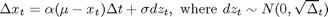

Calibrating & Simulating Natural Gas Spot Prices
This example demonstrates calibrating an Ornstein-Uhlenbeck mean reverting stochastic model from historical data of natural gas prices. The model is then used to simulate the spot prices into the future using the Stochastic Differential Equation Simulation engine in Econometrics Toolbox.
Contents
Import Historical Data
The data can either be imported from a MAT-file or from the database using the auto-generated fetch function. The data set contains spot prices for natural gas at Henry Hub from 2000 to 2008
clear data = fetchNGData S = data.NaturalGas;
data =
Date: [2676x1 double]
NaturalGas: [2676x1 double]
CrudeOil: [2676x1 double]
FuelOil: [2676x1 double]
The Model
The model used for simulating the Natural Gas prices is an Ornstein-Uhlenbeck brownian motion with mean reverting drift. This model is fit to the log of natural gas prices. The discrete-time equation of this model can be written as,

This model can be calibrated to historical data by performing a linear regression between log prices and their first difference. Specifically, the equation can be rewritten as,
Calibrate Parameters
The reversion rate and mean level can be calculated from the coefficients of a linear fit between the log prices and their first difference scaled by the time interval parameter. All quantities are specified on an annual scale.
x = log(S); dx = diff(x); dt = 1/261; % Time in years (261 observations per year) dxdt = dx/dt; x(end) = []; % To ensure the number of elements in x and dxdt match % Fit a linear trend to estimate mean reversion parameters coeff = polyfit(x, dxdt, 1); res = dxdt - polyval(coeff, x); revRate = -coeff(1) meanLevel = coeff(2)/revRate vol = std(res) * sqrt(dt)
revRate =
1.7696
meanLevel =
1.7043
vol =
0.74451
Create an Ornstein-Uhlenbeck mean reverting drift model
An Ornstein-Uhlenbeck model is a special case of a Hull-White-Vasicek model with constant volatility. The HWV constructor is used to setup an SDE model with the parameters estimated above. The start state of the model is set to the last observed log spot price. This model can be easily extend to accommodate the forward curve and option prices by setting the meanLevel and volatility parameters to be functions of time.
OUmodel = hwv(revRate, meanLevel, vol, 'StartState', x(end)) % Alternatively, one could equivalently use the SDEMRD object as follows % OUmodel = sdemrd(revRate, meanLevel, 0, vol, 'StartState', x(end))
OUmodel =
Class HWV: Hull-White/Vasicek
----------------------------------------
Dimensions: State = 1, Brownian = 1
----------------------------------------
StartTime: 0
StartState: 1.31507
Correlation: 1
Drift: drift rate function F(t,X(t))
Diffusion: diffusion rate function G(t,X(t))
Simulation: simulation method/function simByEuler
Sigma: 0.744514
Level: 1.70426
Speed: 1.76964
Monte-Carlo Simulation
The model defined above can be simulated with the simulate method of the SDE object to generate multiple log price paths. These are exponentiated to compute the simulated natural gas prices. The plot below shows 100 paths simulated 80 days into the future.
NTrials = 1000; NSteps = 2000; Xsim = simulate(OUmodel, NSteps, 'NTrials', NTrials, 'DeltaTime', dt); Xsim = squeeze(Xsim); % Remove redundant dimension Ssim = exp(Xsim); % Visualize first 80 prices of 100 paths plot(data.Date(end-20:end), S(end-20:end), data.Date(end)+(0:79), Ssim(1:80,1:100)); datetick; xlabel('Date'); ylabel('NG Spot Price');
Save Model
The calibrated model is saved in a MAT-file for later use.
save SavedModels\NGPriceModel OUmodel dt
Visual Analysis of Simulated Price Paths
Instead of plotting a number of paths at once, we can plot longer single paths against the observed historical data to visually validate the simulated paths. This can serve as a final sanity check.
path = 14; plot(data.Date, data.NaturalGas, 'b', data.Date(end)+(0:NSteps), Ssim(:,path), 'r'); title(['Historical & Simulated Prices, Path ' int2str(path)]); datetick('x','keeplimits');
Automated Visualization for Calibration Report
This section creates plots of different simulations in an automated fashion to include in the calibration report.
NTrials = 12; NSteps = 2000; Xsim = simulate(OUmodel, NSteps, 'NTrials', NTrials, 'DeltaTime', dt); Ssim = exp(Xsim); for path = 1:NTrials plot(data.Date, data.NaturalGas, 'b', data.Date(end)+(0:NSteps), Ssim(:,path), 'r'); title(['Historical & Simulated Prices, Path ' int2str(path)]); datetick snapnow; end %#ok<*NOPTS>